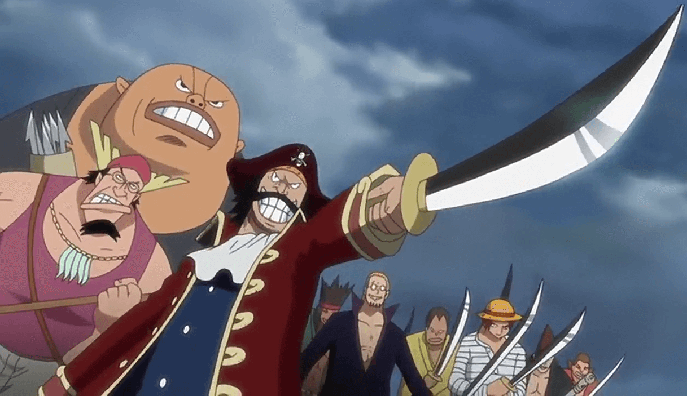
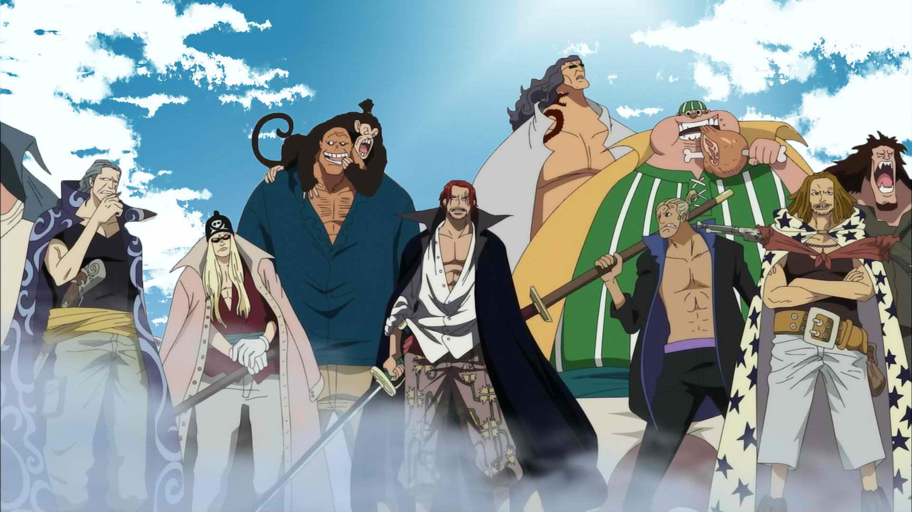
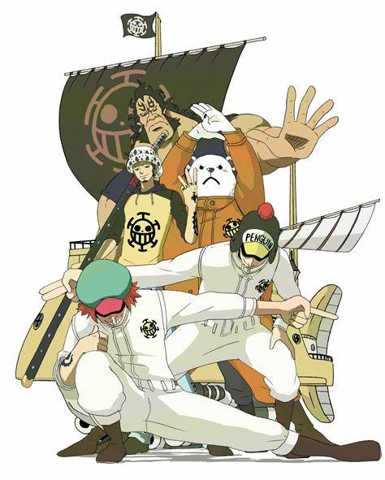
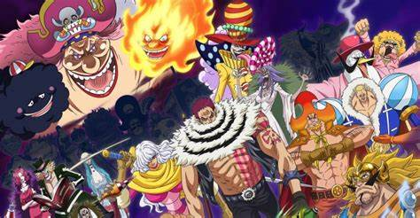
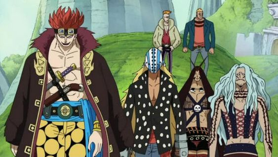
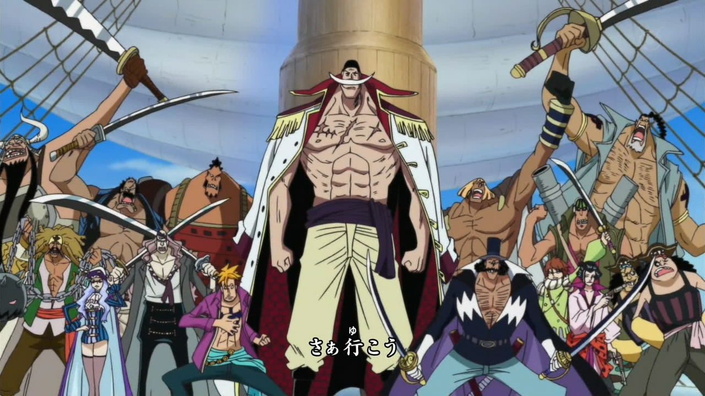
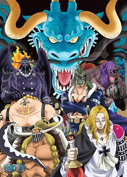

Strawhat Pirates

The Straw Hat Pirates or Mugiwara Pirates are an infamous and most powerful rising pirate crew that originated from the East Blue, but have various members from different areas and led by the main protagonist, Monkey D. Luffy. The "Straw Hats" are named after Luffy's signature hat that was given to him by red-Haired Shanks, and the first referred to as the Straw Hat Pirates by Smoker in Alabasta.
Roger Pirates
The Roger Pirates were the pirate crew of the late Pirate King, Gol D. Roger and were the only known crew to ever reach Laugh Tale, the end of the New World in the Grand Line. They encountered Vice Admiral Garp on several occasions and were strong rivals to the Whitebeard Pirates.
Red Hair Pirates
The Red Hair Pirates are an infamous and powerful pirate crew ruling in the New World, captained by their leader Red-Haired Shanks, who is one of the Four Emperors.
Heart Pirates
The Heart Pirates are an infamous and notable rookie pirate crew from the North Blue and introduced on Sabaody Archipelago around the time the Straw Hat Pirates arrived there two years ago. Their captain, Trafalgar D. Water Law, is a member of the Worst Generetion and a former member of the Seven Warlords of the Sea.
Big Mom Pirates
The Big Mom Pirates are an extremely infamous and powerful pirate crew led by the Emperor Charlotte Linlin, better known as "Big Mom", and they are in control of the powerful nation of Totto Land, with their captain ruling it as its queen and their base of operations being Whole Cake Island, the country's main island.
Kid Pirates
The Kid Pirates are an infamous and notable rookie pirate crew introduced during the Sabaody Archipelago Arc during the time the Straw Hat Pirates arrived there two years ago. Their captain is Eustass Kid. Both members had slightly higher bounties than the respective members of the Straw Hat Pirates before the timeskip.
Whitebeard Pirates
The Whitebeard Pirates were formerly one of the strongest pirate crews in the world, as their late captain, Whitebeard, was one of the only pirates to have ever been a match for the Pirate King, Gol D. Roger, in a fight. Whitebeard's crew is segmented into divisions, instead of all under their captain's direct command.
Beasts Pirates
The Beasts Pirates are an extremely infamous and powerful pirate crew led by Kaido of the Four Emperors. They are based in Wano Country, specifically headquartered on Onigashima.